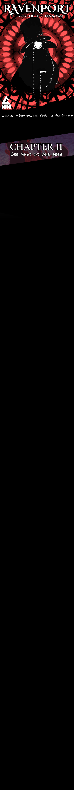
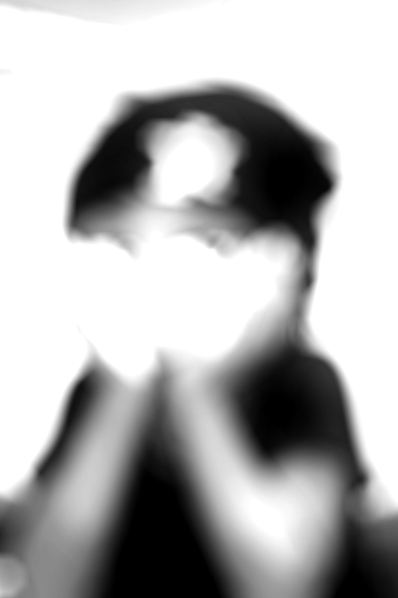

“Ah… love.”
The word lingered in the dark like smoke.
A shadow shifted within the room, barely visible
except for the slow movement of a figure reclining
in a chair. The only light came from a narrow window
overlooking the city, Ravenport stretching endlessly
below — alive, glowing, indifferent.
“Something so many people receive,”
he continued softly,
“and yet discard like it’s worthless.”
A quiet laugh escaped him. Not amused — hollow.
He leaned forward, resting his elbows on his knees,
fingers interlaced.
“I crave it,” he whispered. “Desperately.”
His eyes closed for a moment, as if
picturing someone’s
face.
“Such beautiful eyes…”
Another breathy laugh. “Haha.”
The sound died quickly.
Silence filled the room again — thick, heavy, familiar.
“The world is so big,” he murmured, rising slowly
from his seat, “and yet I am alone.”
He walked toward the window. The city reflected faintly in
the glass — fractured, distant, unreachable. From up here
, people were just moving dots. Lives. Desires. Weaknesses.
All so close.
All so far.
“I crave something…”
He paused.
The room seemed to hold its breath with him.
His gaze dropped — to the table beside the window, where
a dagger lay untouched. Steel caught the city’s light, a
thin spark dancing along its edge.
His lips curved upward.
“Ah.”
The loneliness twisted into clarity.
“If I cannot be given what I deserve,”
he said quietly, “then I will take control of this
city.”
His fingers brushed the dagger, not gripping it — just
acknowledging its presence.
“And from it,” he continued, voice steady now,
“I will take the love I am owed.”
He laughed again.
This time, it echoed — bouncing off the walls, folding back
into itself, filling the room until it sounded less like
amusement and more like a promise.



.png)
.png)
.png)